Conductor
Your art. AI at your side.
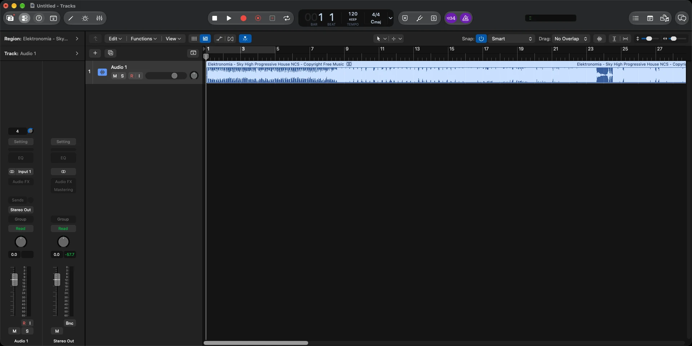
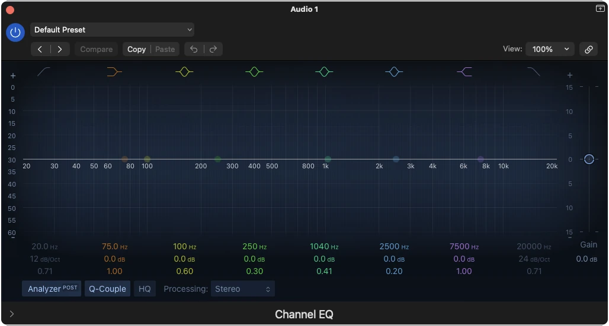
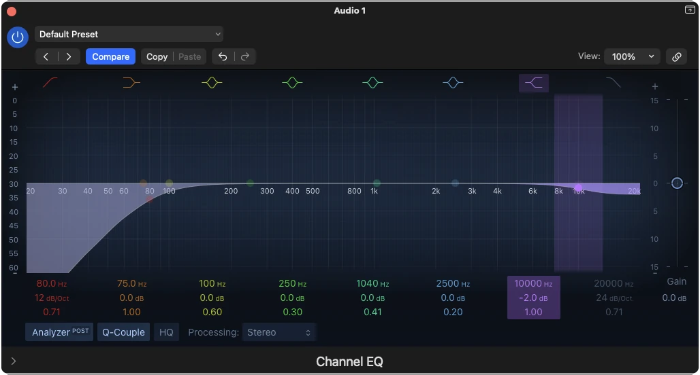
Low Cut → 80 HzHigh Shelf → −2 dB
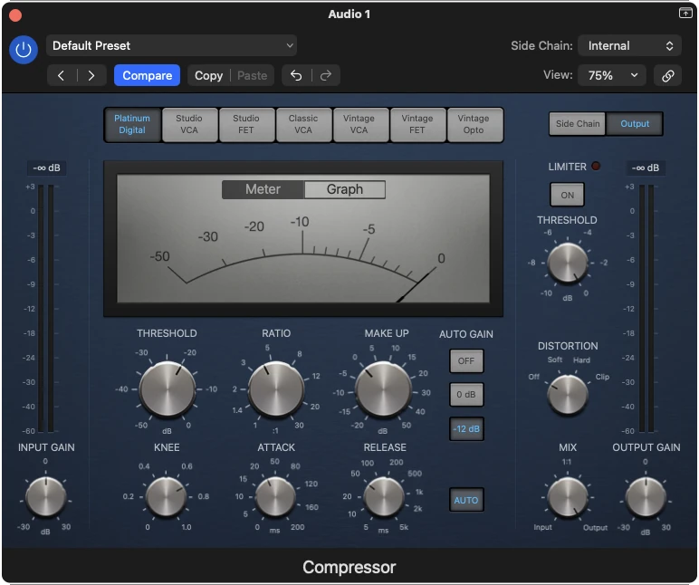
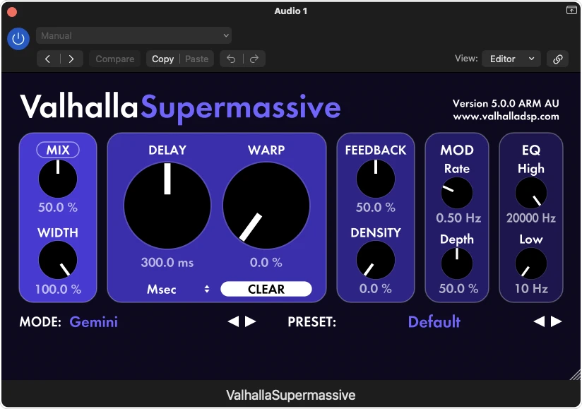
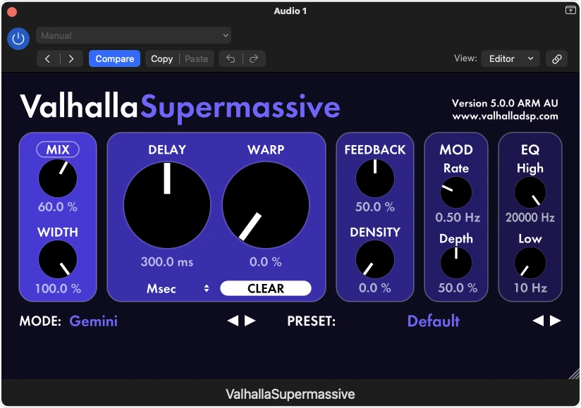
Supermassive · Mix → 60%
Ratio → 2:1
Attack → 30 ms
Release → 100 ms
Threshold · when it kicks in
Ratio · how hard it squeezes
Attack · how fast it grabs
Release · how fast it lets go
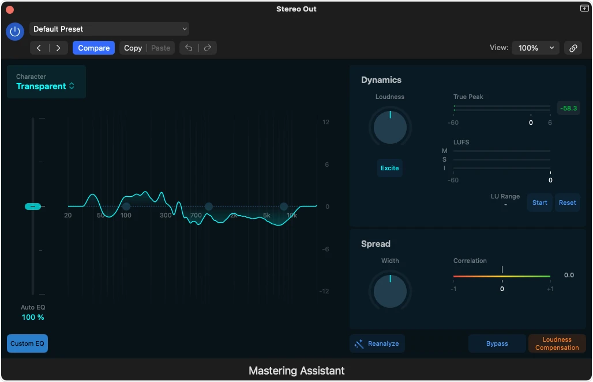
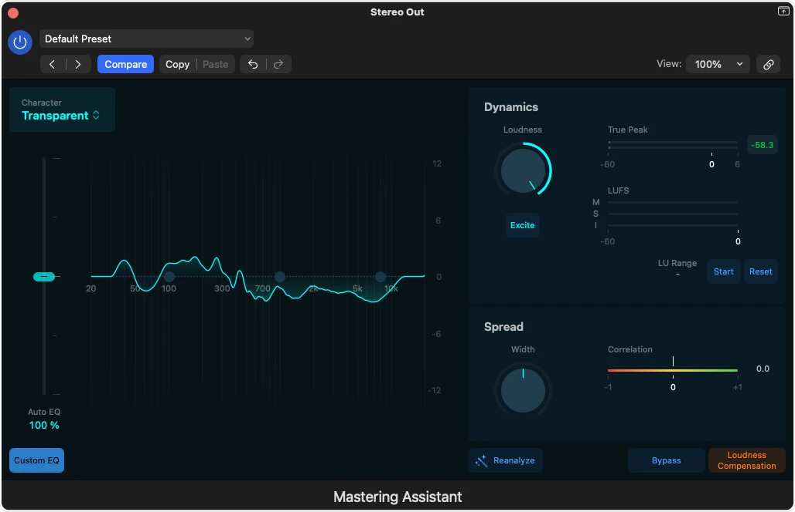
Mastering Assistant · Loudness → +1
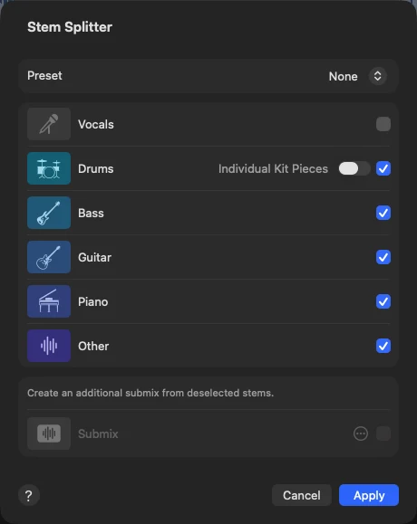
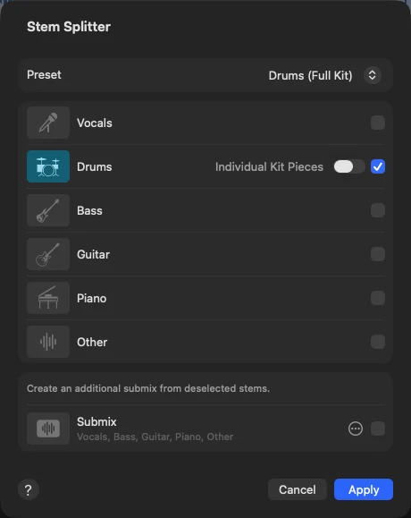
Stem Splitter · Drums only, ready to Apply
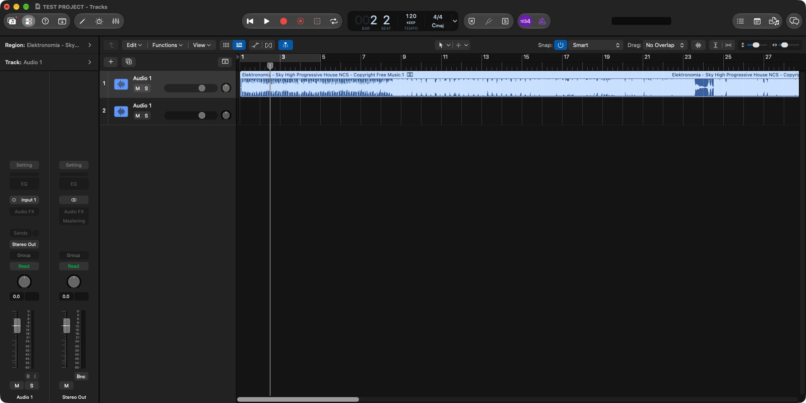
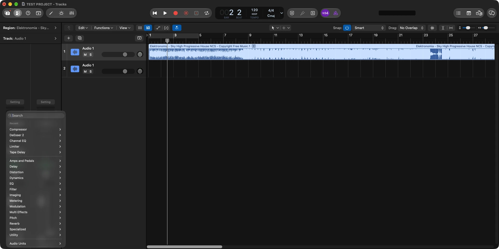
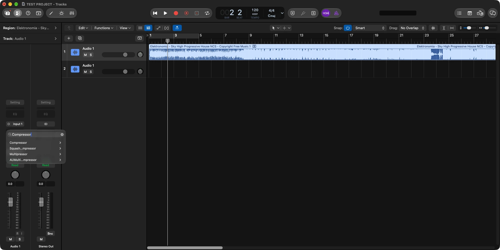
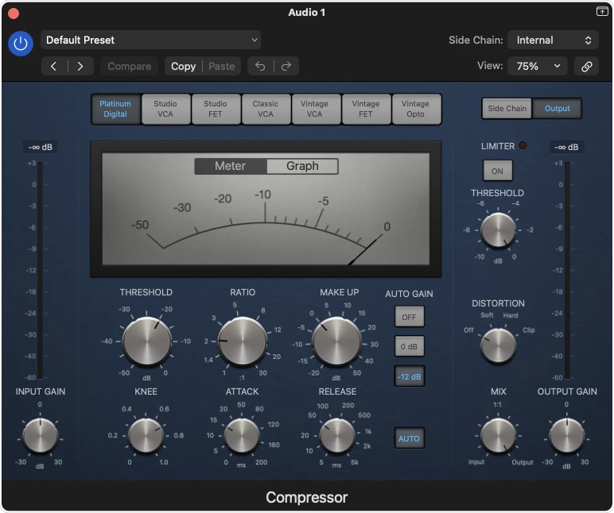
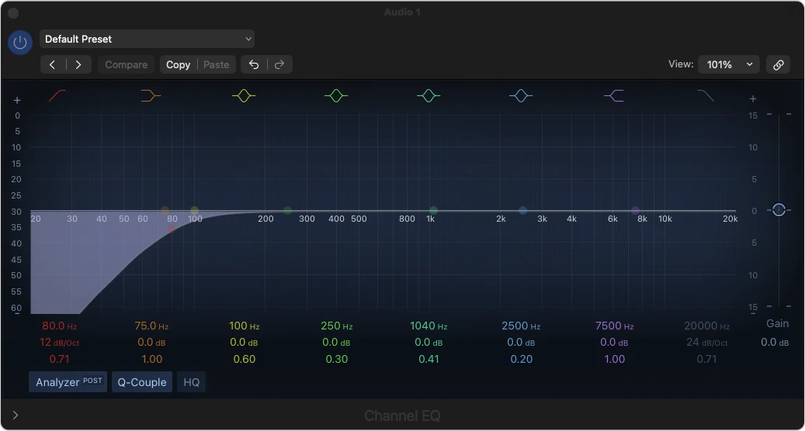
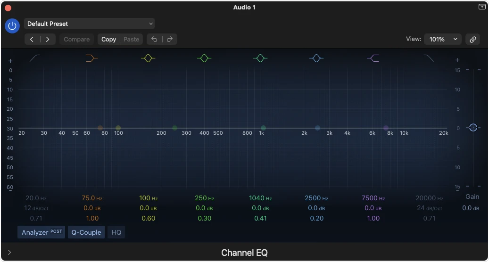
Low Cut → 80 Hz
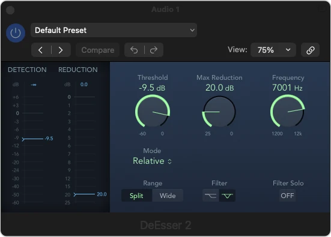
DeEsser 2 added

Copy · Threshold → −23 dB
⌘D · copy of Audio 1, with its plug-ins
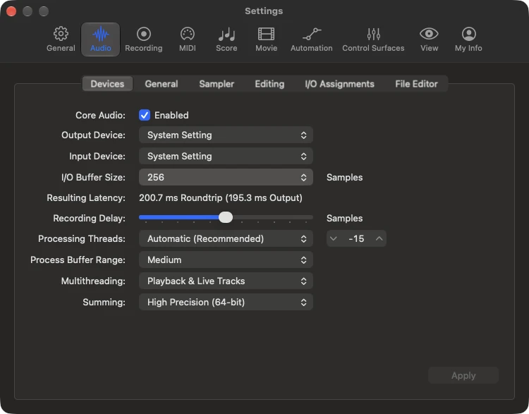
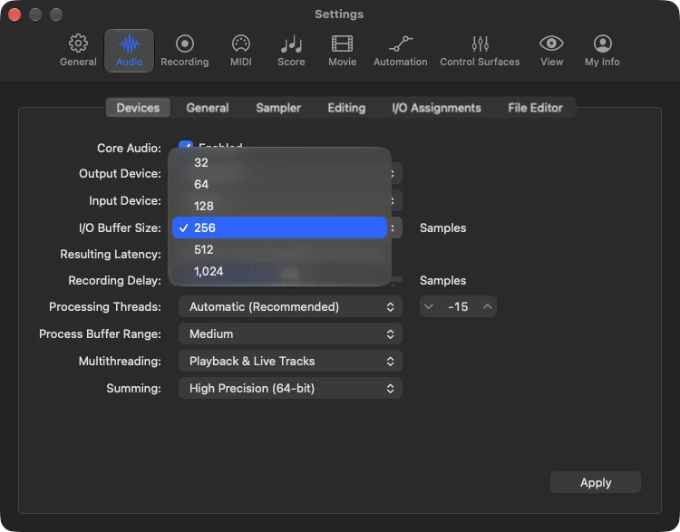
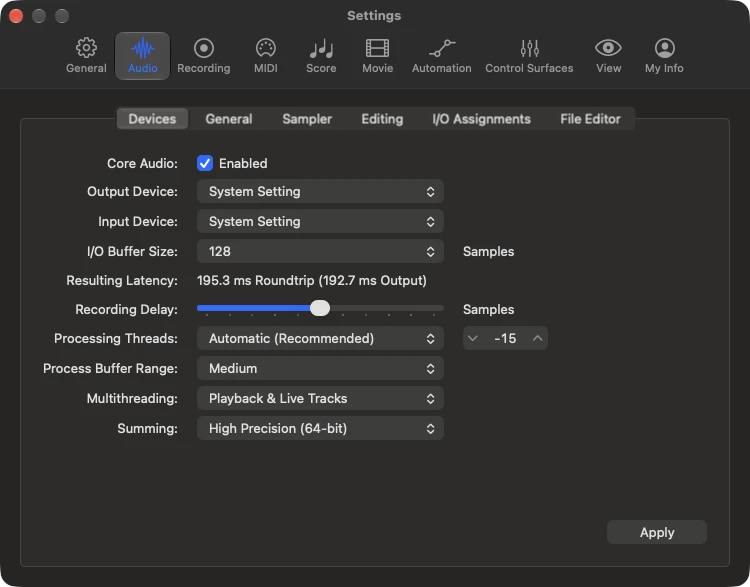
I/O Buffer Size → 128
89 messages left
Ask anything about your Logic Pro session.
Explain Mode
Learn as you create.
Explain mode gives concise answers to any question, with technical terms defined in a click. Visual pointers walk you through menu paths and settings.
Conductor does the rest.
Manage native and third-party plug-ins, find buried settings, and more.
Your session, your call.
Conductor shows you every change first; one click reverts the action. Keybind changes are detected before anything runs.